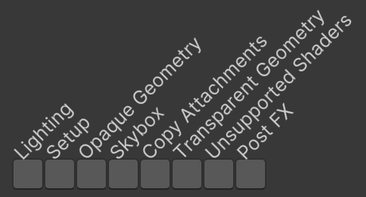
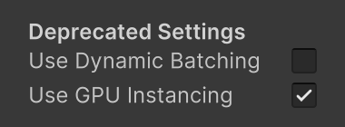

Custom SRP 2.1.0
Renderer Lists
- Use renderer lists to draw geometry.
- Cull passes with nothing to draw.
- Split geometry rendering into multiple passes.
- Deprecate settings for dynamic batching and GPU instancing.

This tutorial is made with Unity 2022.3.10f1 and follows Custom SRP 2.0.0.
Unsupported Shaders Pass
Although we have adapted our SRP to work with the Render Graph API we haven't changed how we render things, so don't benefit from the graph's features yet. In this tutorial we'll switch to using renderer lists when drawing visible geometry.
We begin by adapting UnsupportedShadersPass because it is simple.
Moving Code
Copy the shader tag ID array and error material from CameraRenderer to UnsupportedShadersPass, initializing the material in Record. Also remove the CameraRenderer field and no longer invoke its DrawUnsupportedShaders method. Keep the renderer parameter of Record for now.
static readonly ShaderTagId[] shaderTagIds = {
new("Always"),
new("ForwardBase"),
new("PrepassBase"),
new("Vertex"),
new("VertexLMRGBM"),
new("VertexLM")
};
static Material errorMaterial;
//CameraRenderer renderer;
void Render(RenderGraphContext context) { } //=> renderer.DrawUnsupportedShaders();
[Conditional("UNITY_EDITOR")]
public static void Record(RenderGraph renderGraph, CameraRenderer renderer)
{
…
if (errorMaterial == null)
{
errorMaterial = new(Shader.Find("Hidden/InternalErrorShader"));
}
//pass.renderer = renderer;
…
}
The copied code can now be removed from CameraRenderer.
//static ShaderTagId[] legacyShaderTagIds = { … };//static Material errorMaterial;//public void DrawUnsupportedShaders() { … }
Rendering via a List
To use renderer lists UnsupportedShadersPass will need to access types from the UnityEngine and UnityEngine.Rendering.RendererUtils namespaces.
using System.Diagnostics; using UnityEngine; using UnityEngine.Experimental.Rendering.RenderGraphModule; using UnityEngine.Rendering; using UnityEngine.Rendering.RendererUtils;
Instead of a CameraRenderer parameter Record now needs parameters for the camera and culling results. It uses those to create a RendererListDesc struct, passing it the shader tag ID array, the culling results, and the camera.
public static void Record(
RenderGraph renderGraph, Camera camera, CullingResults cullingResults)
{
#if UNITY_EDITOR
using RenderGraphBuilder builder = renderGraph.AddRenderPass(
sampler.name, out UnsupportedShadersPass pass, sampler);
if (errorMaterial == null)
{
errorMaterial = new(Shader.Find("Hidden/InternalErrorShader"));
}
new RendererListDesc(shaderTagIds, cullingResults, camera);
builder.SetRenderFunc<UnsupportedShadersPass>(
(pass, context) => pass.Render(context));
#endif
}
Adjust the arguments passed to Record in CameraRenderer.Render to match.
UnsupportedShadersPass.Record(renderGraph, camera, cullingResults);
The renderer list description replaces the drawing, filtering, and sorting settings that we previously used to draw. Now we only have to create a single description. We have to sets its render queue range, which for this pass includes everything. We also have to use the error material as an override material to draw geometry with unsupported shaders.
new RendererListDesc(shaderTagIds, cullingResults, camera)
{
overrideMaterial = errorMaterial,
renderQueueRange = RenderQueueRange.all
};
To create a renderer list invoke CreateRendererList on the render graph, passing the description to it.
renderGraph.CreateRendererList(
new RendererListDesc(shaderTagIds, cullingResults, camera)
{
overrideMaterial = errorMaterial,
renderQueueRange = RenderQueueRange.all
});
This doesn't directly give us a reference to a RendererList, but a RendererListHandle, which is a handle for the list resource that is managed by the renderer graph. Create a field for it so we can access it in Render.
RendererListHandle list;
The handle that we get in Record isn't valid at that time. We have to register the handle so the renderer graph knows that our pass uses it, by passing it through the builder's UseRendererList method. That gives us the same handle back, which we assign to our field. The render graph will make sure that the list exists and is valid when it invokes the render function of our pass.
pass.list = builder.UseRendererList(renderGraph.CreateRendererList(
new RendererListDesc(shaderTagIds, cullingResults, camera)
{
overrideMaterial = errorMaterial,
renderQueueRange = RenderQueueRange.all
}));
To finally draw the geometry invoke DrawRendererList on the context's command buffer with the handle as an argument. The argument's type is RendererList, but RendererListHandle implicitly converts to it. Then have the scriptable render context execute the command buffer and then clear the buffer.
void Render(RenderGraphContext context)
{
context.cmd.DrawRendererList(list);
context.renderContext.ExecuteCommandBuffer(context.cmd);
context.cmd.Clear();
}
Geometry with unsupported shaders should now get renderer by using a renderer list. You can test this by putting something with such shaders in the scene, like a sphere with the default material.
Culling the Pass
When the renderer graph gets compiled it can cull passes that are not needed. If a pass uses renderer lists and all of them end up being empty then it will have nothing to draw and could be skipped.
The renderer graph doesn't cull based on renderer lists by default. We have to enable it by setting the render graph's rendererListCulling option to true in CameraRenderer.Render.
var renderGraphParameters = new RenderGraphParameters
{
commandBuffer = CommandBufferPool.Get(),
currentFrameIndex = Time.frameCount,
executionName = cameraSampler.name,
rendererListCulling = true,
scriptableRenderContext = context
};
Our UnsupportedShadersPass now only renders when needed. Currently this optimization only aborts the render process a little earlier than at the command buffer level, but in the future it can work together with other optimizations to cull interdependent passes.
Visible Geometry Passes
Now that we know how renderer lists work we're going to use them to draw all visible geometry, both opaque and transparent.
Geometry Pass
Instead of adapting VisibleGeometryPass we introduce a new GeometryPass based on UnsupportedShadersPass, copying the shader tag IDs from CameraRenderer. Begin by only setting the render queue range to everything.
using UnityEngine;
using UnityEngine.Experimental.Rendering.RenderGraphModule;
using UnityEngine.Rendering;
using UnityEngine.Rendering.RendererUtils;
public class GeometryPass
{
static readonly ProfilingSampler sampler = new("Geometry");
static readonly ShaderTagId[] shaderTagIds = {
new("SRPDefaultUnlit"),
new("CustomLit")
};
RendererListHandle list;
void Render(RenderGraphContext context)
{
context.cmd.DrawRendererList(list);
context.renderContext.ExecuteCommandBuffer(context.cmd);
context.cmd.Clear();
}
public static void Record(
RenderGraph renderGraph, Camera camera, CullingResults cullingResults)
{
using RenderGraphBuilder builder = renderGraph.AddRenderPass(
sampler.name, out GeometryPass pass, sampler);
pass.list = builder.UseRendererList(renderGraph.CreateRendererList(
new RendererListDesc(shaderTagIds, cullingResults, camera)
{
renderQueueRange = RenderQueueRange.all
}));
builder.SetRenderFunc<GeometryPass>((pass, context) => pass.Render(context));
}
}
Next, add useLightsPerObject and renderingLayerMask parameters to Record and use those as in CameraRenderer.DrawVisibleGeomtry. We have to assign the per-object data flags to the description's rendererConfiguration field.
public static void Record(
RenderGraph renderGraph, Camera camera, CullingResults cullingResults,
bool useLightsPerObject, int renderingLayerMask)
{
using RenderGraphBuilder builder = renderGraph.AddRenderPass(
sampler.name, out GeometryPass pass, sampler);
pass.list = builder.UseRendererList(renderGraph.CreateRendererList(
new RendererListDesc(shaderTagIds, cullingResults, camera)
{
rendererConfiguration =
PerObjectData.ReflectionProbes |
PerObjectData.Lightmaps |
PerObjectData.ShadowMask |
PerObjectData.LightProbe |
PerObjectData.OcclusionProbe |
PerObjectData.LightProbeProxyVolume |
PerObjectData.OcclusionProbeProxyVolume |
(useLightsPerObject ?
PerObjectData.LightData | PerObjectData.LightIndices :
PerObjectData.None),
renderQueueRange = RenderQueueRange.all,
renderingLayerMask = (uint)renderingLayerMask
}));
builder.SetRenderFunc<GeometryPass>((pass, context) => pass.Render(context));
}
Let's make GeometryPass support drawing either opaque or transparent geometry, by adding a boolean opaque parameter to Render. Use it to pick an appropriate sampler, sorting criteria, and render queue range.
static readonly ProfilingSampler//sampler = new("Geometry")samplerOpaque = new("Opaque Geometry"), samplerTransparent = new("Transparent Geometry"); … public static void Record( RenderGraph renderGraph, Camera camera, CullingResults cullingResults, bool useLightsPerObject, int renderingLayerMask, bool opaque) { ProfilingSampler sampler = opaque ? samplerOpaque : samplerTransparent; using RenderGraphBuilder builder = renderGraph.AddRenderPass( sampler.name, out GeometryPass pass, sampler); pass.list = builder.UseRendererList(renderGraph.CreateRendererList( new RendererListDesc(shaderTagIds, cullingResults, camera) { sortingCriteria = opaque ? SortingCriteria.CommonOpaque : SortingCriteria.CommonTransparent, rendererConfiguration = …, renderQueueRange = opaque ? RenderQueueRange.opaque : RenderQueueRange.transparent, renderingLayerMask = (uint)renderingLayerMask })); builder.SetRenderFunc<GeometryPass>((pass, context) => pass.Render(context)); } }
Skybox Pass
We cannot use GeometryPass to draw the skybox, because it cannot be drawn via a rendering list. So let's create a separate SkyboxPass for it that invokes DrawSkybox on the render context. We have to flush the command buffer before that to keep the profiling samples correct.
Only add the pass if the camera is set to draw the skybox, otherwise it is useless.
using UnityEngine;
using UnityEngine.Experimental.Rendering.RenderGraphModule;
using UnityEngine.Rendering;
public class SkyboxPass
{
static readonly ProfilingSampler sampler = new("Skybox");
Camera camera;
void Render(RenderGraphContext context)
{
context.renderContext.ExecuteCommandBuffer(context.cmd);
context.cmd.Clear();
context.renderContext.DrawSkybox(camera);
}
public static void Record(RenderGraph renderGraph, Camera camera)
{
if (camera.clearFlags == CameraClearFlags.Skybox)
{
using RenderGraphBuilder builder = renderGraph.AddRenderPass(
sampler.name, out SkyboxPass pass, sampler);
pass.camera = camera;
builder.SetRenderFunc<SkyboxPass>(
(pass, context) => pass.Render(context));
}
}
}
Copy Attachments Pass
We might also need to copy the attachments in between drawing opaque and transparent geometry. Create a dedicated CopyAttachmentsPass for that as well, which invokes our renderer's CopyAttachments method.
using UnityEngine.Experimental.Rendering.RenderGraphModule;
using UnityEngine.Rendering;
public class CopyAttachmentsPass
{
static readonly ProfilingSampler sampler = new("Copy Attachments");
CameraRenderer renderer;
void Render(RenderGraphContext context) => renderer.CopyAttachments();
public static void Record(RenderGraph renderGraph, CameraRenderer renderer)
{
using RenderGraphBuilder builder = renderGraph.AddRenderPass(
sampler.name, out CopyAttachmentsPass pass, sampler);
pass.renderer = renderer;
builder.SetRenderFunc<CopyAttachmentsPass>(
(pass, context) => pass.Render(context));
}
}
This requires that CameraRenderer.CopyAttachments becomes public and it should begin with flushing the buffer.
public void CopyAttachments()
{
ExecuteBuffer();
…
}
We will properly isolate the code for this pass in a future release.
Replacing the Old Pass
Remove the recording of VisibleGeometryPass from CameraRenderer.Render. Replace it with recording an opaque GeometryPass, followed by SkyboxPass, CopyAttachmentsPass, and finally a transparent GeometryPass. We only need to record CopyAttachmentsPass if a color or a depth texture is used, otherwise we can skip it.
//VisibleGeometryPass.Record(…);GeometryPass.Record( renderGraph, camera, cullingResults, useLightsPerObject, cameraSettings.renderingLayerMask, true); SkyboxPass.Record(renderGraph, camera); if (useColorTexture || useDepthTexture) { CopyAttachmentsPass.Record(renderGraph, this); } GeometryPass.Record( renderGraph, camera, cullingResults, useLightsPerObject, cameraSettings.renderingLayerMask, false);
Then remove the DrawVisibleGeomtry method and delete the VisibleGeometryPass class.
//public void DrawVisibleGeometry(…) { … }
Now the render graph viewer will show more passes than before, depending on which are needed. All four passes could potentially be skipped, independent of one another.

Deprecated Settings
There are two settings that we have ignored: useDynamicBatching and useGPUInstancing. We did that because RendererListDesc doesn't expose options to control dynamic batching and GPU instancing. When using a renderer list, dynamic batching is always disabled and GPU instancing is always enabled. These settings are acceptable. Dynamic batching is an old technique and GPU instancing or the SRP batcher is virtually always superior nowadays. There is also no compelling reason to disallow GPU instancing.
So let's get rid of these two options. First, remove them from the parameter list of CameraRenderer.Render.
public void Render( …//bool useDynamicBatching, bool useGPUInstancing,…) { … }
Next, remove them from CustomRenderPipeline as well.
//readonly bool useDynamicBatching, useGPUInstancing, useLightsPerObject;readonly bool useLightsPerObject; … public CustomRenderPipeline( …,//bool useDynamicBatching, bool useGPUInstancing,…) { …this.useDynamicBatching = useDynamicBatching;this.useGPUInstancing = useGPUInstancing;… } protected override void Render(ScriptableRenderContext context, Camera[] cameras) {} protected override void Render(ScriptableRenderContext context, List<Camera> cameras) { for (int i = 0; i < cameras.Count; i++) { renderer.Render( …,//useDynamicBatching, useGPUInstancing,…); } renderGraph.EndFrame(); }
Third, remove them when construcing the RP instance in CustomRenderPipelineAsset.CreatePipeline.
protected override RenderPipeline CreatePipeline() => new CustomRenderPipeline( …,//useDynamicBatching, useGPUInstancing,…);
Finally, we can remove their configuration fields from the asset as well, but this can be considered a public API change. Removing configuration options can be thought of as a backward-incompatible change, requiring us to increase our release version to 3.0.0. But let's not do that right now. Instead we keep the fields and indicate that they are deprecated, which is acceptable for minor version releases.
Move them to the bottom of the configuration fields, under a new header Deprecated Settings, with tooltips indicating that dynamic batching is no longer used and that GPU instancing is always enabled. Don't assign default values to them, otherwise the compiler will issue warning CS0414 to indicate that they are assigned to but never used.
[SerializeField] bool//useDynamicBatching = true,//useGPUInstancing = true,useSRPBatcher = true, useLightsPerObject = true; … [SerializeField] Shader cameraRendererShader = default; [Header("Deprecated Settings")] [SerializeField, Tooltip("Dynamic batching is no longer used.")] bool useDynamicBatching; [SerializeField, Tooltip("GPU instancing is always enabled.")] bool useGPUInstancing;

We'll remove these settings in the next major release. We might deprecated some more settings before moving on to version 3.0.0.
The next tutorial is Custom SRP 2.2.0.